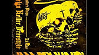
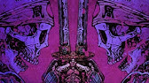
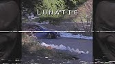
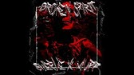
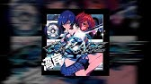

Xteage, Leftoz - INFERNO
Leftoz - CRASH
5admin - Silence
5admin - Garden
MoonDeity - NEON BLADE
MoonDeity - GO
DVRST - TRANSITION TO REALITY
DVRST - Close Eyes
Dxrk ダーク - BONES
Dxrk ダーク - CLOUD
Freddie Dredd - Wrath
Freddie Dredd - Devil's Work
Ghostface Playa, SHADXWBXRN - BLOOD RACE
Ghostface Playa, Lil Toe - HELEN KELLER FREESTYLE
l19u1d - BLACK BLOOD
l19u1d - I AM THE KING
ZODIVK - Ohayo
BEARDED LEGEND - THE WAYFARER(prod. ZODIVK)
HENSONN - SAHARA
HENSONN - SAMURAI
KUTE - TECHNO KILLA
KUTE - HYPERPHONK
KORDHELL - FATALITY
KORDHELL, KUTE - DEAD ON ARRIVAL
KXNVRA - BURNOUT
KXNVRA, KXLLYXU - UNDERSTEER
KSLV - Disaster
KSLV - Lunatic
PlayaPhonk - GODS OF EGYPT
PlayaPhonk - Army Tank
Portwave - Shadow Lady ( PHONK REMIX )
$WERVE, MUPP - BROKEN SPIRIT
TOM SANTA - RAINFALL ($WERVE REMIX)
SHADXWBXRN - DAMAGE
SHADXWBXRN - COURAGE